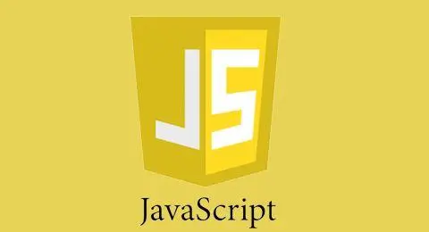

web前端分享JavaScript到底是什么？特点有哪些？这也是成为web前端工程师必学的内容。今天为大家分享了这篇关于JavaScript的文章，我们一起来看看。

一、JavaScript是什么？
1、JavaScript是在网站浏览器上运行的编程语言。
主要是向使用HTML和CSS构建的网站添加，并起到实现各种页面动态效果的作用。例如，在网页上展示的轮播图样式和在咨询平台上输入的内容错误后显示的提示信息等这样的效果。另外针对商城网站里面购买商品时，使用购物车和费用估算也需要用到JavaScript。所以即使它不怎么明显，但依然是编码人员经常会用到的一种语言。
2、JavaScript是一种多功能的开发语言。
除了向网页添加动作的用处之外，JavaScript还可以用来实现很多其他的功能。比如它能够开发出各种网站应用程序，如“聊天工具”和“货币图表”等，可以实时进行修改，这也是JavaScript的主要魅力之一。
二、JavaScript的特点有哪些？
1、脚本语言。JavaScript是一种解释型的脚本语言，C、C++等语言先编译后执行，而JavaScript是在程序的运行过程中逐行进行解释。
2、基于对象。JavaScript是一种基于对象的脚本语言，它不仅可以创建对象，也能使用现有的对象。
3、简单。JavaScript语言中采用的是弱类型的变量类型，对使用的数据类型未做出严格的要求，是基于Java基本语句和控制的脚本语言，其设计简单紧凑。
4、动态性。JavaScript是一种采用事件驱动的脚本语言，它不需要经过Web服务器就可以对用户的输入做出响应。在访问一个网页时，鼠标在网页中进行鼠标点击或上下移、窗口移动等操作JavaScript都可直接对这些事件给出相应的响应。
5、跨平台性。JavaScript脚本语言不依赖于操作系统，仅需要浏览器的支持。因此一个JavaScript脚本在编写后可以带到任意机器上使用，前提上机器上的浏览器支持JavaScript脚本语言，目前JavaScript已被大多数的浏览器所支持。